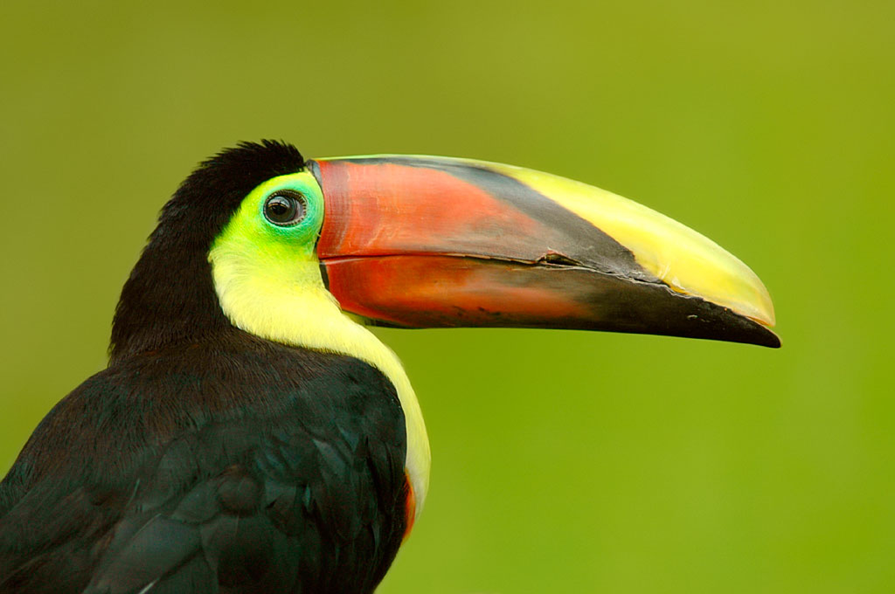

 Figura 2. Foto del Tucán pecho amarillo (Ramphastos ambiguus)
Para reconocer un paisaje sonoro es necesario que exista una confluencia entre la biofonía, geofonía y antropofonía, estos elementos son fiel reflejo de las comunidades bióticas las cuales pertenecen a un hábitat y ecosistema específico (Caycedo-Rosales P. & C. González. 2018).
En el programa Raven Pro nos proporciona un manual con cada métrica utilizada en este estudio (Charif et al. 2010). Ayudando a interpretar correctamente el estudio de paisajes sonoros, los cuales permiten evaluar y monitorear la heterogeneidad del paisaje por medio de la fauna vocalmente activa (insectos, aves mamíferos y anfibios).
A continuación una breve explicación de cada métrica:
En una población local que sea única, se puede exhibir similitudes, sin embargo, al copiar los cantos los individuos pueden generar variaciones en su repertorio, dando lugar a diferencias locales (Lemon R. E. 1975).
Además otro factor importante son los caracteres culturales del canto, estos ocurren gracias a la presencia de los adultos de una región determinada, provocando que los patrones geográficos de los cantos sean afectados por la dispersión y la época de aprendizaje, por que en una región amplia en un rango determinado las características resultan similares, pero cuando el movimiento es poco entre regiones estás dienten a divergir. (Mendoza, Á. M., & M. I. Arce-Plata 2012).
Cabe destacar tambien, el impacto de los paisajes urbanos y la fragmentación de las áreas boscosas, reflejando diferencias encontradas en los estudios de Lynch A (1996) en Costa Rica entre las zonas urbanas y zonas suburbanas. Este incremento de los niveles de sonido de fondo afecta tanto los resultados en la investigación y genera un enmascaramiento acústico, obstruyendo en la comunicación de los organismos, ya sea para fines reproductivos, de territorialidad, de alerta, disminuyendo la efectividad de la red social existente.
Conclusiones
Las diferencias encontradas en los cantos del Ramphastos ambiguus en las tres zonas Neotropicales, indican que la distancia entre los paises es un factor de suma relevancia debido a la diferenciaciones en la estructura tanto urbana como boscosa. Una homogeneidad en la zonas de estudio nos proporciona una mayor certeza de contar con una comunidad similar en su
el paisaje sonoro, y no alteraria tanto los resultados en las metricas de entropia y frecuencia tanto alta como baja. Además que la diferencia de tiempo y la cantidad de grabaciones de canto en Venezuela son mucho menor que los demás paises, porque para no se puede hacer un análisis comparativo entre los países. Por lo que a futuras investigaciones se propone buscar zonas con menor diferencias geográficas, estructurales y culturales. Aumentar el número de grabaciones por región y para minimizar aún más el rango de error se recomienda utilizar el mismo método y dispositivo para grabación de cantos de los tucanes o cualquier ave de interes.